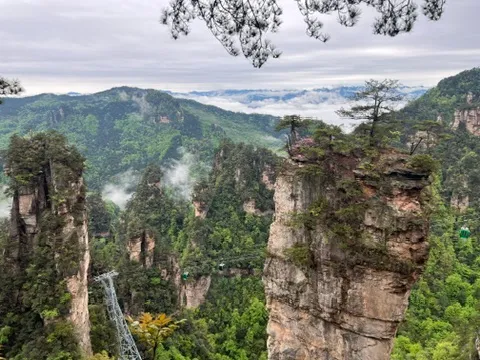

ATTRACTION TICKETS
Book the right ticket combination
Tell us where you want to go and we will confirm the correct ticket, date and entry requirements.
Plan this tripWHAT TO EXPECT
Local support, clearly explained
National Forest Park · 4-day multi-entry ticketRoutes may include Bailong Elevator, Tianzi Mountain and Golden Whip Stream. The ticket is valid for four days from first activation; this does not automatically reserve four entry dates. Keep no more than two unused entry reservations at a time. For a third visit, contact Localtour China after your actual first entry; for a fourth visit, contact us after your actual second entry. Before every entry, your date, entrance and time slot must be confirmed. Reservations depend on remaining availability and are not guaranteed. All visits must fall within the four-day validity period. Third and fourth refer to visit order: visits need not be on consecutive dates, and you do not have to visit four times.
Tianmen MountainConfirm the selected line, entry date and time before payment.
Grand CanyonGlass Bridge and canyon options depend on the selected product.

A clear quote before you pay
1Send your datesTell us your group size and required services.
2Receive a written quoteWe confirm availability, deposit and balance.
3Pay as instructedUSD payment details appear in the confirmed quote.
Currency, exchange rate, fees, refund terms and the legal receiving entity are shown before payment. This website does not collect card or passport details.
Tell us what you need
Choose your trip details here. You will enter contact details once on the next inquiry page.
Copying does not send the message. Paste it into WhatsApp and press Send.
How it works
Confirm attraction, date, age and entry slot → verify ticket-holder information → check availability
Included
Includes the selected services confirmed in writing.
Exclusions & service limits
Only the selected admission is covered. Transport, guides and separately ticketed experiences must be arranged separately.